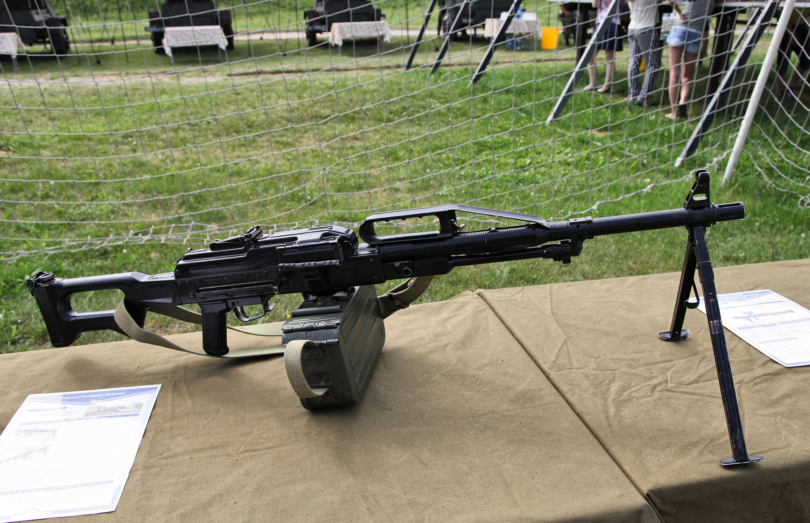

Печенег (пулемёт)
Описание
{kind=link}
В пулемёте применена система принудительного воздушного охлаждения ствола за счёт энергии пороховых газов. Регулируемый газоотводный механизм позволяет эксплуатировать «Печенег» в любых климатических условиях. Ствол имеет наружное оребрение и заключен в металлический кожух. Пороховые газы, выходя из ствола, создают зону разрежения в передней части кожуха. В задней же части кожуха сделаны специальные вентиляционные окна. Таким образом, во время стрельбы вдоль ствола непрерывно прокачивается холодный воздух. Постоянное охлаждение ствола уменьшает рассеивание при стрельбе, а также увеличивает долговечность ствола.
Ресурс ствола составляет 25—30 тысяч выстрелов при стрельбе в интенсивных режимах.
Упрочнение ствола позволило перенести сошку с газовой камеры на дульный срез, что увеличило опорную базу и снизило рассеивание до 70 %, однако такое положение сошек не всегда удобно, так как ограничивает сектор огня по фронту без перемещения стрелка и/или оружия. Выравнивание температурного поля ствола позволило повысить его ресурс до уровня, задаваемого на весь пулемёт (или вдвое по сравнению с ПКМ), а также снизить увод точки прицеливания во время продолжительной стрельбы до величины, равной не более чем 0,001 доли дальности. Это позволило отказаться от второго ствола (хотя крепление ствола у «Печенега» остается быстроразъёмным) и, несмотря на установку на пулемёт дополнительного экрана, снизить походный вес оружия.
Кроме того, конструкция пулемёта «Печенег» позволяет значительно снизить вредное влияние восходящего потока нагретого стволом воздуха на линию прицеливания. Повышенная теплоотдача нового пулемёта заметна в тёмное время суток даже невооружённым глазом по яркости свечения стволов после расстрела всего боекомплекта.
Варианты и модернизации
Серийно производятся следующие варианты пулемёта:
- ночной (6П41Н) — с планкой типа ласточкин хвост для ночного или оптического прицела;
- станковый (6П41С) — со станком Л. В. Степанова 6Т5;
- станковый ночной (6П41СН) — с крепёжной планкой и станком.
- Для пулемёта выпускаются тактические обвесы, имеющее цевья, планки Пикатинни/Вивера (например, обвес фирмы «Зенит»).
{kind=link}
{kind=link}
{kind=link}
{kind=link}